WIA IoT Platform
In this tutorial you will use Wia.io to collect and display data from the RPi. You will also use Wia to send commands to a device.
Set up
Create an account on Wia.io
On your Raspberry Pi, install Wia by opening a terminal window and running the following command:
pip install wia- Make a directory called
iot-week9for your python programs
mkdir iot-week9Create a Device in Wia
Go to the Wia Dashboard and select Create a New Space then select Devices. Add a device and give it the name SensePi. Now, in the Configuration tab for your device, you will find device_secret_key which should begin with d_sk. This will be important later on.
Python Code
In the iot-week9 directory, create a file called sensehat_wia.py containing following code:
from wia import Wia
wia = Wia()
wia.access_token = "Your access token"
wia.Event.publish(name="temperature", data=21.5)- Run the program. In the weather space on the Wia Dashboard, select
Devicesand check thetemperatureevent has appeared in theEventstab for your device.
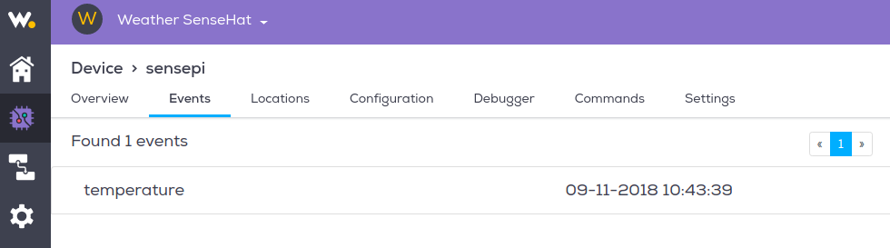
- Select the
Overviewtab and click theAdd a Widgetbutton. Add a widget calledTemperature. For the event field, make sure you type the event name exactly as it appears in the code (mind your case!). Your overview tab should be similar to the following:
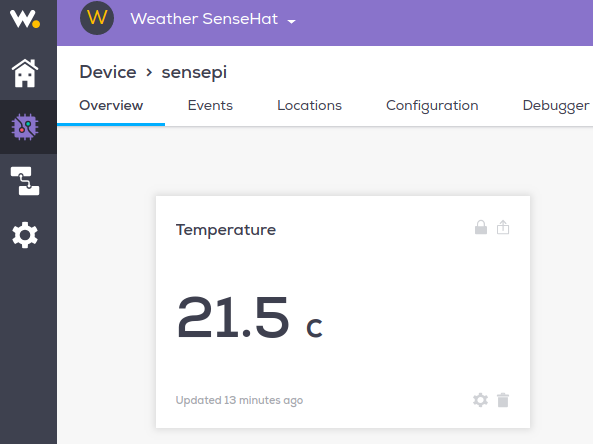
All going well, you now have code that interacts and creates events in Wia
Integrate SenseHat
Now lets update the code to use the SenseHat sensor values to create events:
- Replace the code in
senshat_wia.pywith the following code:
from wia import Wia
from sense_hat import SenseHat
sense = SenseHat()
wia = Wia()
wia.access_token = "Your access token"
temp=round(sense.get_temperature(),2)
wia.Event.publish(name="temperature", data=temp)You are now taking the temperature sensor reading from the SenseHat and publishing it to Wia
- Now, as before, run the script again and check your Wia space responds to the event.
Exercise
- update
sensehat_wia.pyto do the following:- to create
pressureandhumidityevents in your Wia space every 15 seconds. - Add text widgets for pressure and humidity.
- Change the
Temperaturewidget type to a graph(leave default values forTime periodandAggregate function) All going well, youroverviewtab should now look like this and update every 15 seconds.
- to create
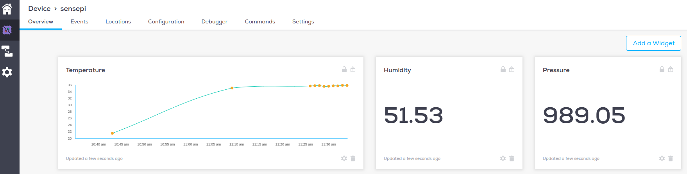
Web Page
- In the same directory as your python script, create a new directory called
html. - Create a file called
index.htmland add the following content:
<!DOCTYPE html>
<html>
<head>
<meta charset="UTF-8">
</head>
<body>
<h1>SenseHat Data</h1>
</body>
</html>- Navigate back to your Wia Dashboard. In the overview for your device, you can see your widgets. In the upper right hand corner of the widget, there should be a box with an arrow. Click the box. A screen like this should pop up.
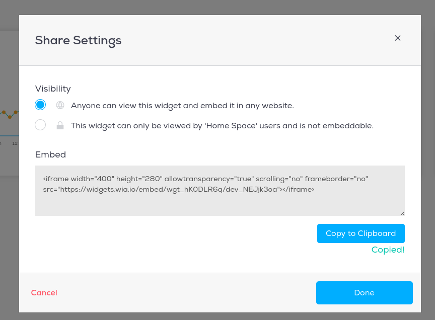
- Select
Anyone can view this widget and embed it in any website.You should also see Embed code, which will start with<iframe>and end with</iframe>. Copy the entire code and paste it below the<h1>SenseHat Weather Station</h1>line and above the</body>line. - View your
index.htmlpage in a browser. It should look similar to the following:
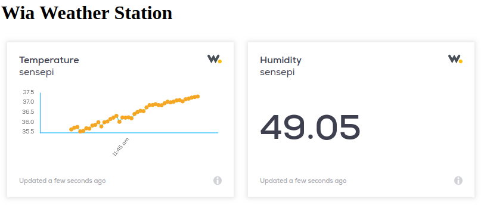
Put it on the web
You can use GitHub to host your webpage so that anybody on the web can view it.
If you don't have a github account already, you can make one here.
Once you are set up with github, create a new repository and name it your-github-username.github.io. Check the box to initialize with a README.
Now, navigate to your new repository and create a new file. It must be named index.html. Copy and paste the code from index.html.
Click commit changes. Now, visit your site at https://username.github.io. You're on the Web!
Smile, you're on camera.
You will now use Wia events, commands and flows to control the SenseHat using facial expressions. Wia uses MQTT and the publish-subscribe pattern we talked about in class in their commands functionality.
Create Commands
- Inside your Device Dashboard click on the
Commandsand then clickAdd Command - Add a
happy-faceandsad-facecommands. You will use these commands to control the Raspberry Pi with a smile!
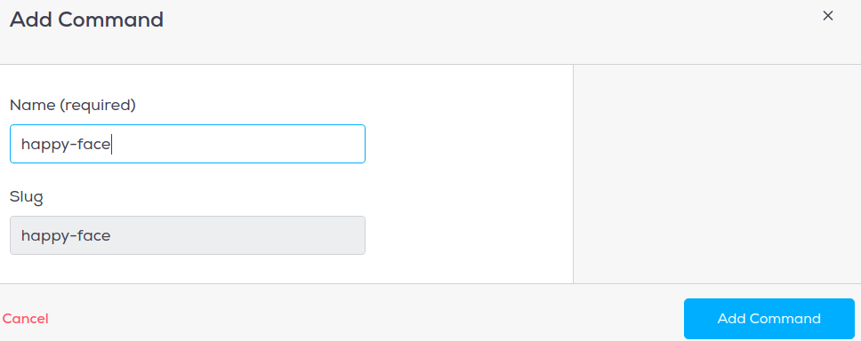
- When finished, the commands tab should look like this:
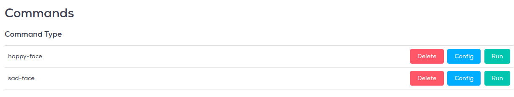
Create Photo Events
You will now write a small program that will take a photo and create photo events in Wia. PLEASE CHOOSE ONE OF THE FOLLOWING OPTIONS TO ACCOMPISH THIS
OPTION 1: Using your Laptop Webcam
Post photo from webcam
Install OpenCV
sudo pip install opencv-python- If not already installed, install Wia
sudo pip install wia- On your laptop workstation, create a directory called
python-photo. - Create a file called
snap.pyand enter the following code:
import cv2
from wia import Wia
import os
import time
input('Hit any key to take a pic...')
vc = cv2.VideoCapture(0)
wia = Wia()
wia.access_token = 'YOUR_DEVICE_SECRET_KEY'
file_name='wia-pic.jpg'
if vc.isOpened(): # try to get the first frame
rval, frame = vc.read()
cv2.imwrite(file_name,frame) # writes image test.bmp to disk
dir_path = os.path.dirname(os.path.realpath(__file__))
result = wia.Event.publish(name='photo', file=open(dir_path + '/' + file_name, 'rb'))
else:
rval = False- Change the
wia.access_tokento your key and run the program. - Look into the camera and press andy key. Your photo will be published as an event on Wia. Log into Wia and you should see the event recorded, similar to the following.
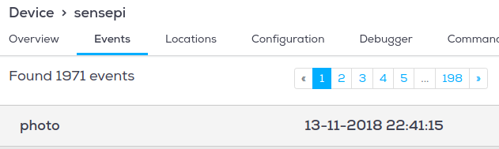
OPTION 2: Using a Raspberry Pi Camera (if you have one)
- Connect a Pi camera module to the Pi. Follow the instuctions here
- Open a terminal window on the RPi and enter
sudo raspi-config - Select option
5 Interfacing Options
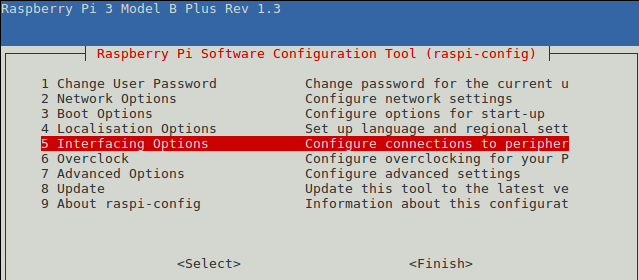
- Select
P1 Cameraand enable the camera interface:
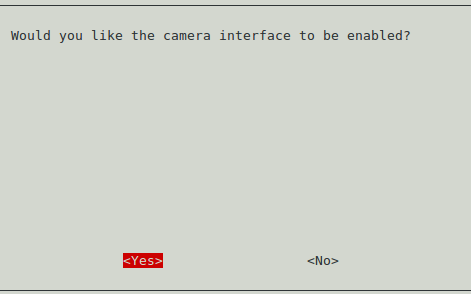
Your camera is ready to go! Exit raspi-conf by selecting back/exit.
Create Python Program
- In the directory you created earlier called
iot-week9create a file calledsnap.py. - Enter the following code in the file and save.
from wia import Wia
import time
from picamera import PiCamera
wia = Wia()
## INSERT YOUR SECRET KET
wia.access_token = 'YOUR_SECRET_KEY'
camera = PiCamera()
## Halt execution until
input('Look at the camera and hit "Enter" to take a pic...')
## Start up PiCam
camera.start_preview()
## sleep for a few seconds to let camera focus/adjust to light
time.sleep(5)
## Capture photo
camera.capture('/home/pi/image.jpg')
## Stop the PiCam
camera.stop_preview()
## Publish "photo" event to Wia. Include the photo file.
result = wia.Event.publish(name='photo', file=open('/home/pi/image.jpg', 'rb'))- Now, open a terminal window in the
iot-week9directory run the script by entering the following command:
python3 snap.py- You should see an image file appear in
/home/pi/image.jpg. - Go to Wia and check that a new
photoevent has appeared.
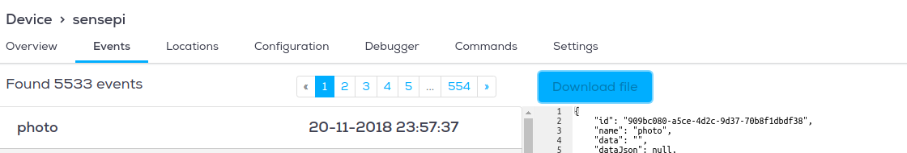
Wia Flows
You will now create a Flow that is triggered by photo events:
- In the Wia dashboard, click on the flow option on the left side. Create a new Flow as follows:
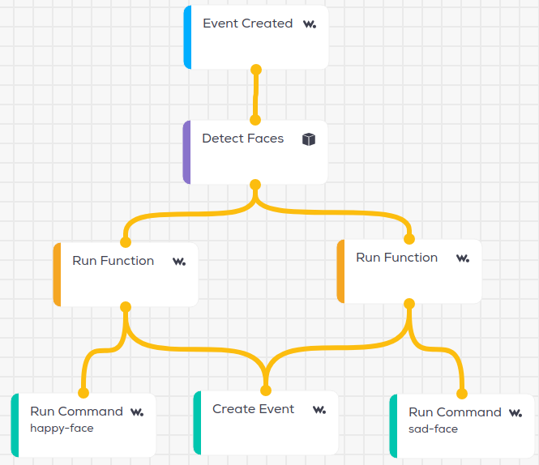
- The trigger is when a
photoevent is created by thesensepidevice. - This then goes through a
Detect Facesservice node, the output of which branches off into twoRun Functionlogic nodes; one to output a string "Yes" if the subject is smiling, and one to output a string "No" if the subject isn't smiling. Here's the code for the 'smiling' logic node:
if (input.body.faceDetails && input.body.faceDetails.length > 0) {
output.body.isSmiling = input.body.faceDetails[0].smile.value;
if (output.body.isSmiling){
output.process = true;
output.body.data = "Yes";
}else{
output.process = false;
}
} else {
output.process = false;
output.body.data = false;
}- The Javascript code for the
not smilingnode is as follows:
if (input.body.faceDetails && input.body.faceDetails.length > 0) {
output.body.isSmiling = input.body.faceDetails[0].smile.value;
if (!output.body.isSmiling){
output.process = true;
output.body.data = "No";
}else{
output.process = false;
}
} else {
output.process = false;
output.body.data = false;
}If the subject is smiling, the 'happy-face' Command is run, triggering the RPi to display a happy emoticon on the SenseHat. If the subject isn't smiling, the 'sad-face' Command is run, displaying a sad emoticon on the SenseHat.
- Now add a photo widget on the
SensePidevices overview page and link it to thephotoevent as follows:

- As an exercise, add a
Textwidget and link it to thehappyevent.
Update Raspberry Pi
- Open a terminal window and run the following command in the
iot_week9directory containingsensehat-wia.py
wget http://rpf.io/shfaces -O faces.py- Update the code in
sensehat_wia.pyto subscribe to the commands and show the corresponding emoticon by updating the code to the following:
from wia import Wia
from sense_hat import SenseHat
import time
from faces import normal, happy, sad
# happy face callback
def on_happy_face(event):
print(":)")
sense.set_pixels(happy)
# sad face callback
def on_sad_face(event):
print(":(")
sense.set_pixels(sad)
sense = SenseHat()
wia = Wia()
wia.access_token = 'd_sk_JFODUgcmYToVZSd7JP8xrt54'
deviceId = 'dev_NEJjk3oa'
wia.Stream.connect()
# Subscribe to happy and sad face commands
wia.Command.subscribe(**{"device": deviceId, "slug": 'happy-face', "func": on_happy_face})
wia.Command.subscribe(**{"device": deviceId, "slug": 'sad-face', "func": on_sad_face})
while True:
temp=round(sense.get_temperature(),2)
press=round(sense.get_pressure(),2)
hum=round(sense.get_humidity(),2)
#publish temp/pressure/hum
wia.Event.publish(name="temperature", data=temp)
wia.Event.publish(name="pressure", data=press)
wia.Event.publish(name="humidity", data=hum)
time.sleep(60)- Run the program on the RPi and take another photo. It should now indicate if you're smiling or not. Smile! You shoud see the corresponding result on the RPi Sensehat.
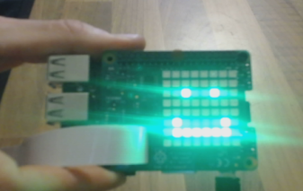